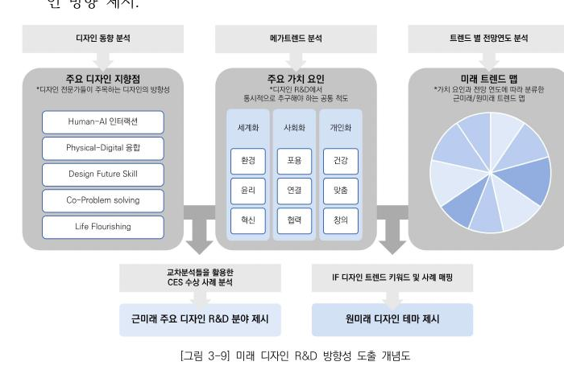

흩어진 트렌드 자료를 비교하기 위한 공통 분석 틀
산업·기술·사회 보고서에 흩어진 정보를 디자인 R&D 과제로 비교할 수 있도록, 공통 분석 틀로 정리할 필요가 있었습니다.
산업·기술·사회 보고서가 각자 존재
트렌드를 디자인 과제로 옮길 기준 필요
어떤 테마부터 다룰지 비교할 근거 필요
국내외 공개 트렌드·디자인 어워드 보고서와 전문가 인터뷰를 근거로 한 조사이며, 특정 기업의 비공개 데이터는 포함하지 않았습니다.
디자인 동향·메가트렌드·전망연도 교차 분석
연구팀은 디자인 동향 분석, 메가트렌드 분석, 트렌드별 전망연도 분석을 교차해 근미래 디자인 R&D 분야와 10대 미래 디자인 테마를 도출했습니다. 저는 이 중 메가트렌드 조사를 맡았습니다.

연구팀은 세계화·사회화·개인화 3개 축의 공통 가치 요인과 Human-AI 인터랙션을 포함한 5가지 디자인 지향점을 교차해 우선순위를 정했습니다.
도식은 보고서의 조사 체계를 요약한 것이며, 특정 기업의 전략이나 투자 계획을 의미하지 않습니다.
디자인 지식·테크·스킬 체계
트렌드·외부지식·경험지식·데이터로 쌓은 '디자인 지식'과, 개념구동·요소지원·모델링·스타일구현 기술로 쌓은 '디자인 테크'를 교차시켜, 개념 → 사용성/경험 → 조형 → 프로토타이핑/평가로 이어지는 디자인 스킬 체계로 정리했습니다.
디자인 지식
트렌드, 외부지식, 경험지식, 데이터를 디자인 판단의 재료로 구조화했습니다.
디자인 테크
개념구동·요소지원·모델링·스타일구현 기술을 디자인 실행 역량으로 분류했습니다.
출처: 연구 보고서의 Design R&D Handbook 인포그래픽.
237쪽 보고서를 정리한 Handbook과 트렌드맵
방대한 조사 내용을 실무에서 참고할 수 있도록, Design R&D Handbook과 트렌드맵 두 가지 시각 자료로 만들었습니다. 두 자료에는 연구팀이 정리한 10대 미래 디자인 테마가 담겨 있습니다.
디자인 지식·테크·스킬 구조를 한 장으로 정리한 인포그래픽
근미래·원미래 테마를 가치 요인별로 분류한 시각 자료
Human-AI 인터랙션 등 원미래 테마의 정의와 전망
전문가 심층인터뷰 원문과 세부 데이터는 대외비로 제외했습니다.
산출물
연구 전체의 산출물은 디자인 R&D 체계 제안서이며, 제가 만든 Design R&D Handbook과 트렌드맵은 그 결과를 실무에서 참고할 수 있게 정리한 자료입니다.
10대 미래 디자인 테마 · 5대 초개인화 분야
기업 도입 여부·실행 성과는 범위 밖